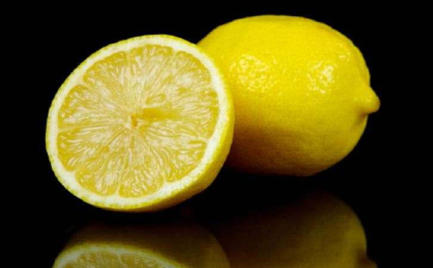

When Life Gives You Lemons...
...Eat A Miracle Berry
Jeffrey Gu
Spring 2009
 You
pop a miracle berry in your mouth, and then bite into a lemon,
expecting to pucker at its taste. But instead, you are shocked to find
that it is the sweetest thing you have ever tasted, thanks to the
taste-modifying protein in the miracle berry. Aptly named miraculin,
the protein has the unusual property of making sour foods taste sweet.
Miraculin is extracted from the fruit of the Synsepalum dulci ficum
plant, first documented during Chevalier des Marchais’ 1725 excursion
to West Africa and now known as the miracle berry. Although greatly
overlooked and all but forgotten since then, miraculin has recently
been reintroduced into modern taste buds.
To better understand miraculin, it would be helpful
to look at how it affects the mechanics of taste. The human tongue is
full of specialized taste cells, more commonly referred to as taste
buds, which contain special receptor sites that create the sensation of
taste. Taste buds are typically categorized by their receptors on the
surface of the tongue. The widely-used artificial sweetener, aspartame,
provides a sweet taste without the nutritional properties of sugar,
essentially tricking the tongue by binding to the receptor that
perceives sweetness. Miraculin also works by manipulating the sweet
receptors on the tongue, according to Göran Hellekant, PhD, DVM, a
miraculin researcher and Professor of Physiology and Pharmacology at
the University of Minnesota. “Sweet receptors sit on taste buds and
wait for sweet molecules to come along and set them off,” Hellekant
says. “Normally, they can only be set off by chemicals that are
legitimately sweet, but miraculin may distort their shape a bit so that
they become responsive to acids, instead of sugar and other sweet
things.” Although miraculin leaves the fibers that normally respond to
acid unchanged, their responses to sour compounds are overpowered by
the sensations delivered by the miraculin-modified sweet-sensing fibers.
As with other sugar substitutes such as aspartame,
sucralose, and saccharin, miraculin is non-nutritive. These compounds
are effective in providing a sensation of sweetness without being
metabolized by the body. Miraculin is not currently commercially
available as there is an ongoing political battle involving the Food
and Drug Administration (FDA) on the safety of artificial sweeteners.
But as the miracle berry makes its way more and more into mainstream
palates, we get ever closer to experiencing the miracle of miraculin
ourselves.
About the Author
Jeffrey Gu is a second year Integrative Biology major who hopes to become a neurosurgeon.